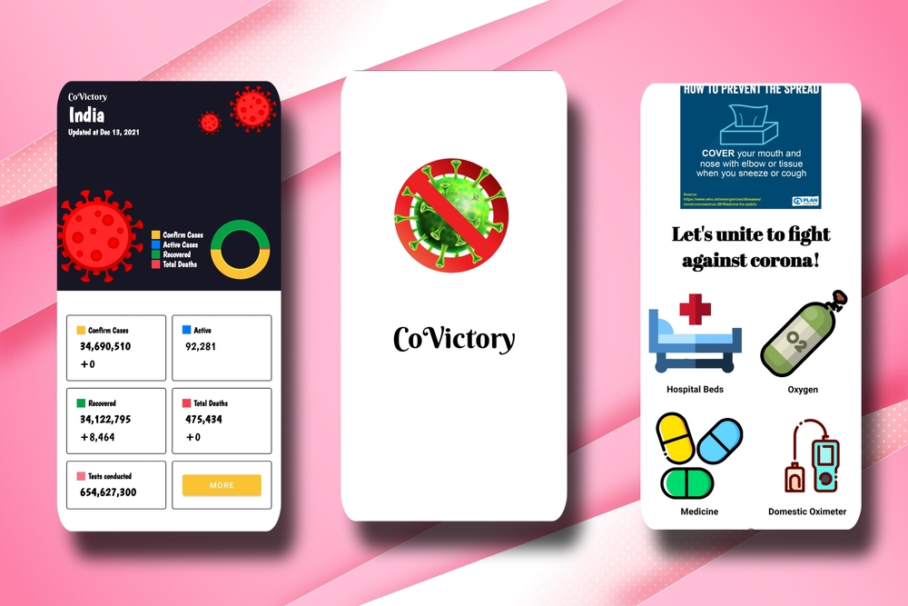
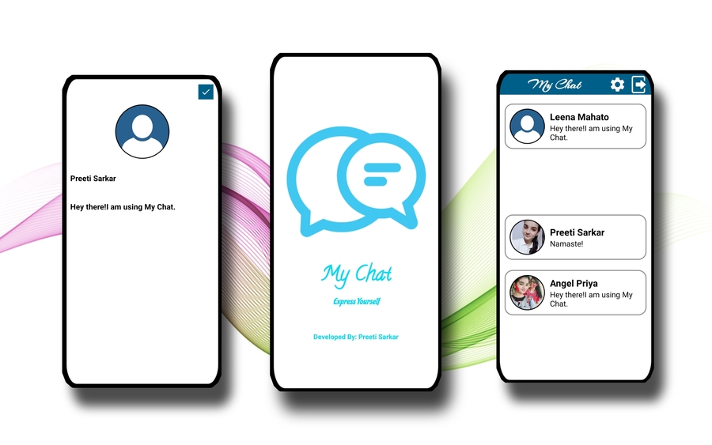

All News App
• This All News App uses an API to fetch the latest news from several
different news websites.
• Can read headlines and also the entire news in detail in the same
app.Has the search feature to search a news with a particular keyword.
• Tools/Technology:NewsApi , Retrofit,Picasso,Json, Swipe
Refresh,JAVA,XML

CoVictory App
• CoVictory app uses an API to fetch the latest statistics of covid-19
cases in India.It also helps us search information regarding Covid 19
relief resources such as oxygen,medicine etc.Along with that it has an
in-built Oximeter feature which let’s users monitor their oxygen level.
• Tools/Technology:IIR Filter,REST API ,SQLite
Database,Spinners,Java,XML

My Chat App
• This My Chat App is an application to exchange messages with friends
and family.Can update bio and profile picture as per desire.
• Tools/Technology:Firebase,Java,XML,Picasso